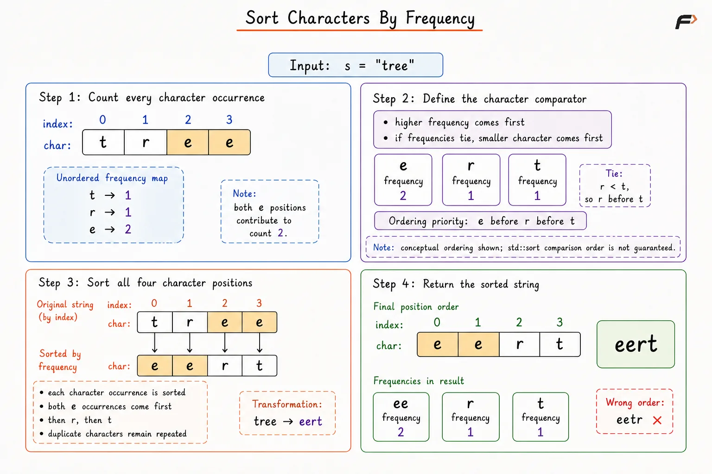
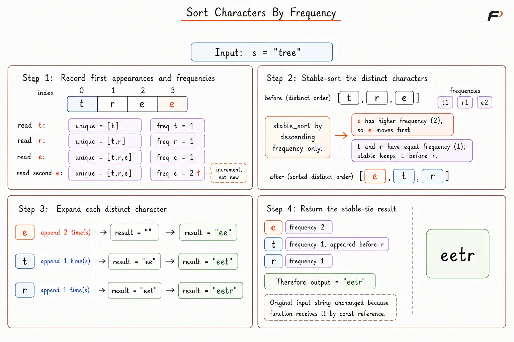
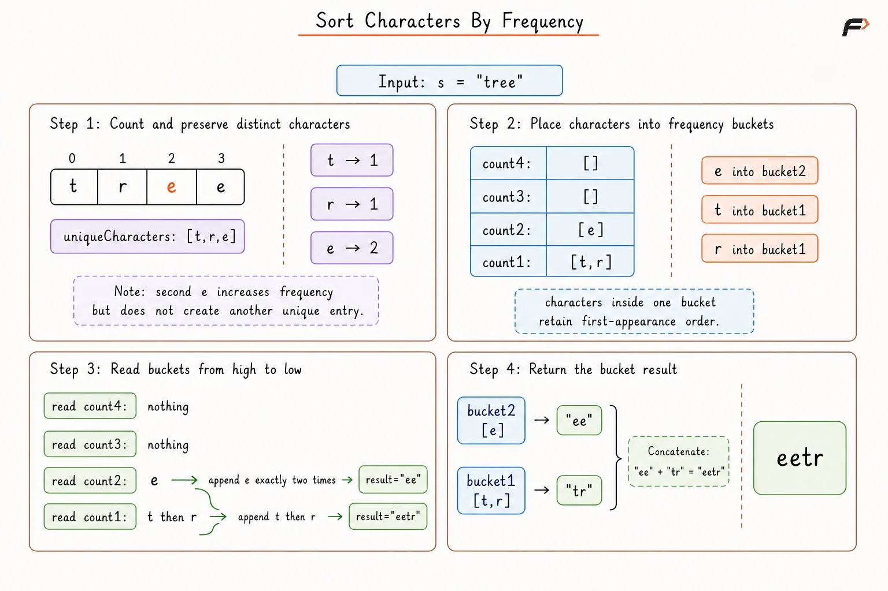

Sort Characters By Frequency
Given a string s containing N characters, rearrange all characters in decreasing order of frequency.
All occurrences of the same character must appear inside one contiguous block. Character blocks having the same frequency may appear in any order.
Character matching is case-sensitive. Return any valid rearranged string.
Example 1
Input: s = "tree"
Output: "eert"
Explanation:
Character 'e' appears twice, while 'r' and 't' appear once.
The 'e' block must appear before both frequency-1 blocks. "eetr" is also a valid output.
Example 2
Input: s = "cccaaa"
Output: "aaaccc"
Explanation:
Characters 'a' and 'c' both appear three times, so either block may appear first.
Both "aaaccc" and "cccaaa" are valid. "cacaca" is invalid because equal characters do not form contiguous blocks.
Example 3
Input: s = "Aabb"
Output: "bbAa"
Explanation:
Character 'b' appears twice. Characters 'A' and 'a' appear once each.
Uppercase 'A' and lowercase 'a' are treated as different characters.
Brute Force Approach
Frequency order cannot be decided from a single occurrence because complete occurrence counts are required first. A Hash Map stores the total frequency of every distinct character.
A direct implementation sorts all N character positions using the stored frequencies. Higher-frequency characters receive greater priority. A secondary character comparison groups equal-frequency occurrences of the same character and provides a deterministic order.
Sorting all positions remains simple, but repeated copies of one character participate separately in the sorting process.
Algorithm
Return an empty string when
sis empty.Initialize a Hash Map
frequencyto store the occurrence count of every character.Traverse
sand increment the count associated with every processed character.Create a sortable character list containing all
Npositions froms.Sort the character list using the following priority:
Place a character with a higher frequency before a character with a lower frequency.
Place characters with equal frequencies according to character value, keeping identical characters together.
Join all sorted characters and return the resulting string.
Dry Run

k
Solution
#include <bits/stdc++.h>
using namespace std;
class Solution {
public:
/* Sorts all character positions by frequency. */
string frequencySort(string s) {
unordered_map<char, int> frequency;
// Count every character occurrence.
for (char character : s) {
frequency[character]++;
}
// Keep higher-frequency characters first.
sort(
s.begin(),
s.end(),
[&](char first, char second) {
if (
frequency[first] !=
frequency[second]
) {
return frequency[first] >
frequency[second];
}
// Group equal-frequency characters by value.
return first < second;
}
);
return s;
}
};
// Driver code to execute the solution.
int main() {
string s = "tree";
Solution solution;
string answer = solution.frequencySort(s);
cout << answer << endl;
return 0;
}Complexity Analysis
Time Complexity: O(N log N) on average, where N represents the number of characters in s. Frequency counting requires O(N) average time, while sorting all N character positions requires O(N log N) time.
Space Complexity: O(N + U), simplified to O(N), where U represents the number of distinct characters. The frequency map stores at most U entries, while the sortable character container and returned string contain N characters.
Better Approach
Sorting all N positions repeats work because every copy of the same character carries the same frequency. Only distinct characters need ordering.
Let U represent the number of distinct characters. A first-appearance list stores every distinct character once. Stable sorting arranges the U characters by decreasing frequency while preserving first-appearance order for equal frequencies.
After sorting, repeating every distinct character according to the stored frequency rebuilds the complete result. Sorting work decreases from N items to U items.
Algorithm
Return an empty string when
sis empty.Initialize a Hash Map
frequencyto store character frequencies.Initialize a list
uniqueCharactersto preserve the first appearance of every distinct character.Traverse every character in
s.Append a character to
uniqueCharacterswhen no previous occurrence exists.Increment the corresponding frequency inside
frequency.
Stable-sort
uniqueCharactersin decreasing order of frequency.Preserve first-appearance order when two distinct characters have equal frequencies.
Initialize an empty result string.
Traverse the sorted distinct-character list and append every character
frequency[character]times.Return the completed result string.
Dry Run

g
Solution
#include <bits/stdc++.h>
using namespace std;
class Solution {
public:
/* Sorts distinct characters by frequency. */
string frequencySort(const string& s) {
unordered_map<char, int> frequency;
vector<char> uniqueCharacters;
// Count frequencies and preserve first appearances.
for (char character : s) {
if (
frequency.find(character) ==
frequency.end()
) {
uniqueCharacters.push_back(character);
}
frequency[character]++;
}
// Preserve first-appearance order on frequency ties.
stable_sort(
uniqueCharacters.begin(),
uniqueCharacters.end(),
[&](char first, char second) {
return frequency[first] >
frequency[second];
}
);
string result;
result.reserve(s.length());
// Expand every distinct character by frequency.
for (char character : uniqueCharacters) {
result.append(
frequency[character],
character
);
}
return result;
}
};
// Driver code to execute the solution.
int main() {
string s = "tree";
Solution solution;
string answer = solution.frequencySort(s);
cout << answer << endl;
return 0;
}Complexity Analysis
Time Complexity: O(N + U log U) on average, where N represents the number of characters and U represents the number of distinct characters. Frequency counting and result construction require O(N) time, while stable sorting requires O(U log U) time. The worst case becomes O(N log N) when every character is distinct.
Space Complexity: O(N + U), simplified to O(N), including the returned string. The frequency map, distinct-character list, and stable-sorting storage require O(U) auxiliary space.
Optimal Approach
Sorting only distinct characters reduces unnecessary comparisons, but comparison-based sorting still requires O(U log U) time.
Every character frequency lies between 1 and N. Frequency therefore provides a bounded integer index suitable for Bucket Sort. An array containing N + 1 buckets can store every distinct character inside the bucket matching the corresponding frequency.
Reverse bucket traversal automatically processes larger frequencies first. Every distinct character enters one bucket only once, while repeated output copies are created during final string construction.
Algorithm
Return an empty string when
sis empty.Initialize a Hash Map
frequencyand a listuniqueCharacters.Traverse
sto count every character and preserve distinct characters in first-appearance order.Create
N + 1buckets because possible frequencies range from0toN.Traverse
uniqueCharactersand place every distinct character once insidebuckets[frequency[character]].Initialize an empty result string.
Traverse bucket indices from
Ndown to1.For every character inside bucket
count, append the character exactlycounttimes.Return the completed result string.
Dry Run

k
Solution
#include <bits/stdc++.h>
using namespace std;
class Solution {
public:
/* Groups distinct characters by frequency buckets. */
string frequencySort(const string& s) {
int n = s.length();
unordered_map<char, int> frequency;
vector<char> uniqueCharacters;
// Count frequencies and preserve first appearances.
for (char character : s) {
if (
frequency.find(character) ==
frequency.end()
) {
uniqueCharacters.push_back(character);
}
frequency[character]++;
}
// Store each distinct character in one bucket.
vector<vector<char>> buckets(n + 1);
for (char character : uniqueCharacters) {
buckets[frequency[character]].push_back(
character
);
}
string result;
result.reserve(n);
// Read buckets from highest frequency to lowest.
for (int count = n; count >= 1; count--) {
for (char character : buckets[count]) {
result.append(count, character);
}
}
return result;
}
};
// Driver code to execute the solution.
int main() {
string s = "tree";
Solution solution;
string answer = solution.frequencySort(s);
cout << answer << endl;
return 0;
}Complexity Analysis
Time Complexity: O(N) on average, where N represents the number of characters in s. Frequency counting requires O(N) time, bucket placement requires O(U) time, reverse bucket traversal requires O(N) time, and result construction appends exactly N characters.
Space Complexity: O(N + U), simplified to O(N). The Hash Map stores at most U frequencies, while the bucket array contains N + 1 positions. The returned result stores N characters.
FAQs about Sort Characters By Frequency
1. Does the order of equal-frequency character blocks matter?
No. Any order remains valid when all blocks follow non-increasing frequency order.
For s = "cccaaa", both "cccaaa" and "aaaccc" are valid.
2. Why does the Brute Force comparator need a tie-breaker?
A frequency-only comparator treats different equal-frequency characters as equivalent. Sorting all character positions without a tie-breaker can leave equal-frequency characters interleaved.
A secondary character comparison keeps all occurrences of one character contiguous.
3. Why does the Better Approach sort only distinct characters?
Every occurrence of the same character has the same frequency. Sorting repeated copies performs redundant comparisons.
Sorting one entry per distinct character reduces the sortable collection from N entries to U entries.
4. Is stable sorting required for correctness?
No. Equal-frequency blocks may appear in any order.
Stable sorting provides deterministic tie handling by preserving first-appearance order. A separate tie-breaker can provide another valid deterministic order.
5. Why are N + 1 buckets required?
A character can appear as many as N times. Bucket index N must therefore exist.
Bucket index 0 remains unused because no stored distinct character has zero frequency.
6. Why is every distinct character stored only once inside a bucket?
The bucket index already represents the complete frequency. Storing a character once avoids duplicating all output copies before result construction.
7. Can a priority queue solve the problem?
Yes. A max heap can store distinct character-frequency pairs.
The resulting time complexity becomes O(N + U log U), and auxiliary space becomes O(U) excluding the returned string.
8. Can a fixed frequency array replace the Hash Map?
Yes, when the character set is bounded and known in advance.
For example, an ASCII-only input can use a fixed-size frequency array. A Hash Map keeps the solution suitable for a broader character set.
9. Does Hash Map access always take O(1) time?
Hash Map insertion and lookup take O(1) average time. Severe hash collisions can produce slower worst-case behaviour.